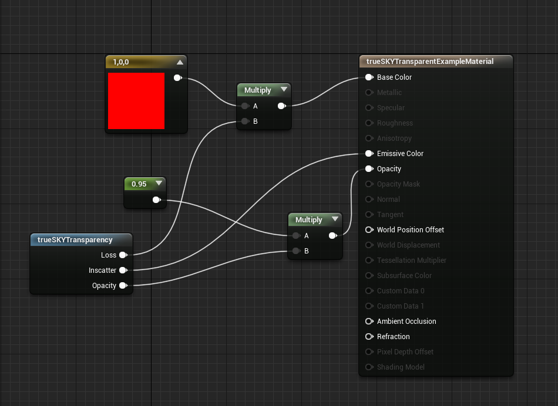

Unreal Materials with trueSKY
Truesky provides several material functions that can be integrated with existing or new materials, to better integrate them within the present atmospherics systems.
If you need a better understand of Unreals material system, there are a large number of tutorials on understanding and using them here.
TrueSKY Transparency
As ordering rendering between translucent objects and our translucent clouds can be difficult, the trueSKYTransparency material function is avaiblable, which can modify and calculate atmospheric effects on the material, as well as allow it to be occulded by clouds.
The function has 3 outputs:
Loss
Loss is a measure of how much light is scattered travelling from the object to the viewpoint. It can be used with most materials by multiplying the base colour by the Loss.
Inscatter
Inscatter is a measure of how much light is scattered towards the viewpoint between the viewpoint and the given surface. It can be used with most materials by adding it to the emmissive colour
Opacity
The Opacity output can be used to approximate the occulsion of clouds onto the object. It can be used with most materials by multiplying it by the current opacity input.
Example
Here is a basic example of a translucent material within a scene. It will be occluded by clouds, and will be affected by both loss and inscatter the further away from the object the viewpoint will get.
